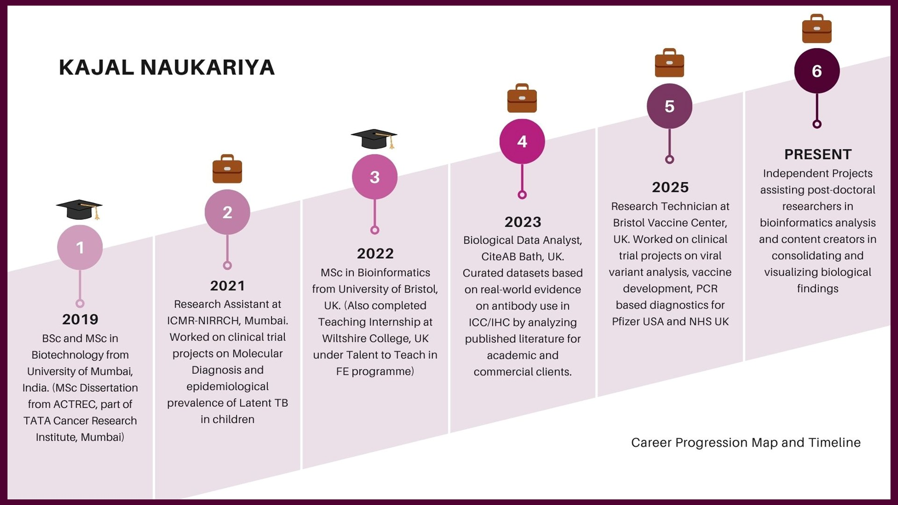

Email: kajalgn@yahoo.co.in | LinkedIn: www.linkedin.com/in/kajal-n-60139116a | ORCID: https://orcid.org/0000-0002-1133-2495
About Me
Professional Summary
Thank you for visiting my profile.
I bring over five years of academic, research, and professional experience in biotechnology and bioinformatics, with a strong foundation in cellular and molecular biology, immunology, tissue culture, protein biochemistry, sequence analysis, epidemiology, and biomedical sciences. My work integrates hands-on wet lab expertise with bioinformatics tools to investigate research questions, test hypotheses, and support both academic and commercial projects.
I have contributed to clinical trials, biotechnological initiatives, and other life sciences projects in international settings with global organizations, including the Indian Council of Medical Research (ICMR‑NIRRCH) in India, Pfizer in the USA, and the NHS in the UK. My experience spans wet lab work, computational analysis, project management, study setup, protocol and SOP development, and the design and validation of vaccines, drugs, and diagnostic assays. I have extensive experience handling pathogenic microbes, viral samples, and human, mammalian, and engineered cell lines, which has enabled me to conduct sensitive research in biobank and high‑containment settings. I am also adept at compiling and communicating data for diverse stakeholders; from collaborators and funders to regulatory bodies.
What drives me is the opportunity to apply research across disciplines and create real‑world impact. I enjoy linking research insights to clinical and population‑level outcomes such as spotting patterns, extracting meaningful trends, and translating data into actionable insights. I have a keen eye for emerging, high‑impact research areas and actively explore their translational and commercial applications.
I routinely integrate AI‑driven tools into my daily workflows to code, analyze biological data, create compelling visualizations, and streamline reporting. This, combined with my cross‑functional technical expertise, allows me to work efficiently at the interface of wet lab science, computational biology, and data communication. I am a self‑starter, confident communicator in English, and a collaborative team player who thrives in interdisciplinary environments and enjoys making science accessible to a broad audience.
More details about my technical and professional skills, research and project experiences, publications, and independent training can be found in the respective sections of my profile.
Career Trajectory

Skills
Current Focus and Upskilling
I am actively expanding my expertise in sequence analysis (genome mapping using Linux, Python and R), protein modelling (Rosetta), and machine learning applications in bioinformatics, with a particular focus on integrating multi-omics data for more holistic and actionable biological insights. I am also developing skills in statistical modelling of large-scale datasets.
On the technical side, I am gaining hands-on experience with cloud computing environments, using Snakemake to build reproducible, automated workflows, and applying version control with Git. Additionally, I am learning Power BI to strengthen my capabilities in interactive data visualization and reporting.
Wet Lab Skills
- Cell and Tissue Culture
- Culture bacterial, mammalian, and human cell lines and tissue samples for gene expression, drug testing, and functional assays.
- Perform transformation, transfection, immunofluorescence assays, and co-culture techniques; integrate results with clinical outcomes.
- Handle infectious clinical samples (respiratory samples infected with COVID-19 and pneumonia causing viruses, TB/HIV human blood samples, sensitive biopsy tissue); maintain biosafety (Class I to IV) and sterile conditions.
- Use brightfield, confocal, and fluorescence microscopy for cell monitoring; capture and analyze images to assess cell health and assay outcomes.
- Molecular Biology and Genetic Engineering
- Operate manual, semi-automated, and automated nucleic acid extraction platforms (QIAsymphony, KingFisher).
- Troubleshoot robotic liquid-handling systems for sample preparation.
- Execute PCR, RT-PCR, and qPCR for diagnostics, assay design, optimization, and troubleshooting.
- Perform plasmid construction, restriction digestion, ligation, transformation, and vector design.
- Design primers using Primer3; assess secondary structures with Mfold.
- Conduct gene expression studies using recombinant DNA in bacterial/mammalian systems.
- Protein Studies and Biochemistry
- Purify recombinant protein via affinity, gel filtration, and HPLC methods.
- Run SDS‑PAGE, Western blotting, spectrometry, and ELISA for protein and cytokine analysis.
- Use UV spectrophotometry, CD, mass spectrometry, NMR, peptide synthesizers, lyophilization, and protein crystallization for structural studies.
Bioinformatics and Data Analytical Skills
- Clinical Trial Data Analysis
- Analyze and visualize data using Excel (pivot tables), Python (Seaborn, Matplotlib, Pandas), R (ggplot2, Tidyverse), Linux, SPSS, and GraphPad Prism.
- Apply statistics—descriptive, inferential, PCA, UMAP, volcano plots, regression, binomial models—to clinical and immunological datasets.
- Manage trial data with Excel, SPSS, and REDCap.
- Automate pipelines using R Markdown, Jupyter, Snakemake, and Git.
- Integrate clinical metadata with molecular data to uncover biomarkers and trends.
- NGS and Genomic Data Analysis
- Analyze genome/transcriptome data using R, Python, and shell scripting in Linux.
- Perform read alignment and variant calling with HISAT2, Bowtie2, SAMtools, FastQC, Fastp, Trimmomatic, featureCounts, Phanotate, and IGV.
- Conduct differential gene expression, transcript quantification, genome mapping, and transcriptome profiling.
- Retrieve and annotate data via NCBI, Ensembl, GEO, SRA Toolkit, Biopython, CLI BLAST, and KEGG.
- Functional Genomics and Pathway Analysis
- Carry out GO analysis (PantherDB, GOrilla), KEGG pathway mapping, enrichment analysis.
- Use ClustalW for gene set analysis.
- Combine mass spectrometry data with UniProt for functional annotation.
- Protein Informatics and Structural Biology
- Build and analyze 3D protein models; perform homology modelling and docking.
- Use PyMOL, SWISS‑MODEL, and AlphaFold for structure visualization.
- Analyze protein-protein interactions, drug binding sites, and structural comparisons.
Professional and Administrative Skills
- Clinical Research and Project Support
- Use Microsoft Office tools (Word, PowerPoint, Excel) for documentation, reporting, and presentations.
- Managed new study setup, timelines, documentation, and coordination on clinical projects.
- Handle consent, patient records, CRFs, to extract insights from clinical data.
- Support site audits, HTA documentation, biobank operations, sample collection in clinical trials.
- Draft protocols, SOPs, and design new clinical/research studies.
- Contribute to diagnostic tool design and validation.
- Track specimens and samples; maintain compliance and ethical standards.
- Oversee lab and project administration, logistics, and supplies.
- Perform lab risk assessments; implement controls per GCLP and biosafety regulations.
- Data Management and Compliance
- Prepare and submit scientific/regulatory reports to collaborators, funders, ethics boards.
- Maintain understanding of data confidentiality, GCP, and regulatory standards.
Soft Skills and Communication
- Scientific Communication
- Published six peer-reviewed papers and presented work at over six international conferences.
- Translate complex research into insights for diverse audiences.
- Collaboration and Teamwork
- Collaborate across multidisciplinary teams in the UK, USA, and India.
- Self-directed, proactive, adaptable in fast-paced environments.
- Leadership and Problem Solving
- Troubleshoot in both lab and computational contexts.
- Identify research applications across fields; adapt tools to new challenges.
- Train junior staff and students in wet lab and bioinformatics techniques.
Education
MSc in Bioinformatics (2021–2022), University of Bristol, UK – Merit
Core modules: Scientific Programming (Python, R), Genomics and Omics Analysis (Linux, command-line tools), Proteomics and 3D Protein Structure Analysis (Pymol), Entrepreneurship and Professional Development.
MSc Bioinformatics Research Project | University of Bristol | Nov 2021 – Sep 2022
- Conducted bioinformatics analysis of mass spectrometry data to identify changes in the endothelial cell secretome following TNF-α treatment.
- Performed data pre-processing, normalization, and statistical analysis using R, applying Principal Component Analysis (PCA) to explore sample clustering and variation.
- Generated volcano plots to visualize differentially expressed proteins and highlight biologically significant changes.
- Applied Gene Ontology (GO) enrichment analysis to interpret biological processes, molecular functions, and cellular components associated with treatment effects.
- Collaborated with experimental teams to integrate bioinformatics insights into biological interpretation, contributing to the development of a robust analysis pipeline.
MSc in Biotechnology (2017–2019), University of Mumbai, India – Grade A+
Core modules: Metabolism, Biochemistry, Molecular Biology, Immunogenetics, Bioprocess Technology, Biosafety, Tissue Culture, Biomedical Studies, Neurobiology, Biostatistics, and Nanotechnology.
MSc Biotechnology Research Project | Tata Memorial Centre – ACTREC, India | Dec 2018 – Mar 2019
- Investigated mechanisms and pathways involved in chemotherapy and radiation resistance in Human colon cancer using tumour biopsies and human colon cancer cell lines.
- Conducted SDS-PAGE, Western blotting, spectrometric protein quantification, and PCR-based molecular analysis.
- Performed drug testing on mammalian cell lines, chemiluminescent assays, and performed differential and recombinant protein expression studies.
- Maintained bacterial vectors and engineered mammalian cell lines under sterile culture conditions.
- Analyzed experimental data using Microsoft Excel and presented findings at regular lab meetings.
BSc in Biotechnology (2014–2017), University of Mumbai, India – Grade A
Core modules: Microbiology, Cell Biology, Immunology, Environmental and Industrial Biotechnology, Molecular Biology, Bioinformatics, Biochemistry, Medical Biotechnology, and Fermentation Technology.
BSc Biotechnology Research Project | Final Year Project | Sep 2016 – Mar 2017
- Developed a bioremediation strategy to reduce the environmental toxicity by Malachite Green dye by isolating, identifying and conducting studies on dye-decolorizing bacterial strains.
- Customized a growth medium for bacterial isolation and enrichment, and measured decolorization efficiency via spectrometric analysis.
- Identified dye-decolorizing bacterial strains using 16S rRNA data and biochemical assays.
- Applied tissue culture techniques to assess phytotoxic effects on plant systems, demonstrating potential for environmental detoxification.